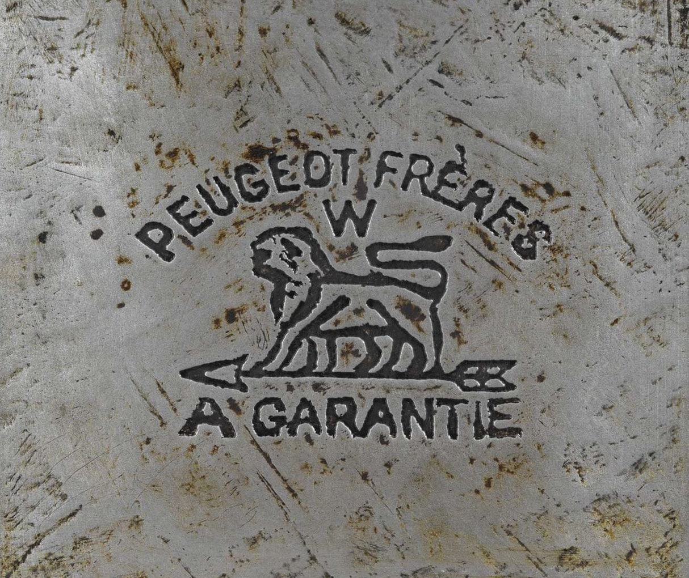

La empresa familiar fue fundada en 1810 por Jean-Frédéric y Jean-Pierre II PEUGEOT, durante la transformación en acería del molino hidráulico familiar situado en el lugar llamado Sous-Cratet, en el municipio de Hérimoncourt (Doubs). Diferentes ramas de la familia emprenden producciones muy diversificadas, pero todas basadas en el acero (herramientas, muelles, ballenas de paraguas, armaduras de corsés, molinos de café, piezas de relojería, bicicletas, etc.).

Peugeot Argentina tiene la misión de producir, comercializar y exportar vehículos y piezas de manera eficiente y socialmente responsable, con una calidad competitiva a nivel internacional y una rentabilidad sostenida en el tiempo. A su vez, busca contribuir al desarrollo del perfil internacional de la marca y sostener la presencia estratégica en el mercado regional.
Como marca que ha cuidado desde sus inicios el comportamiento en carretera y las prestaciones en sus vehículos Peugeot enfoca el futuro del automóvil poniendo el foco en el placer de conducir y el confort, conjugándolo con los mayores niveles de sostenibilidad y seguridad.